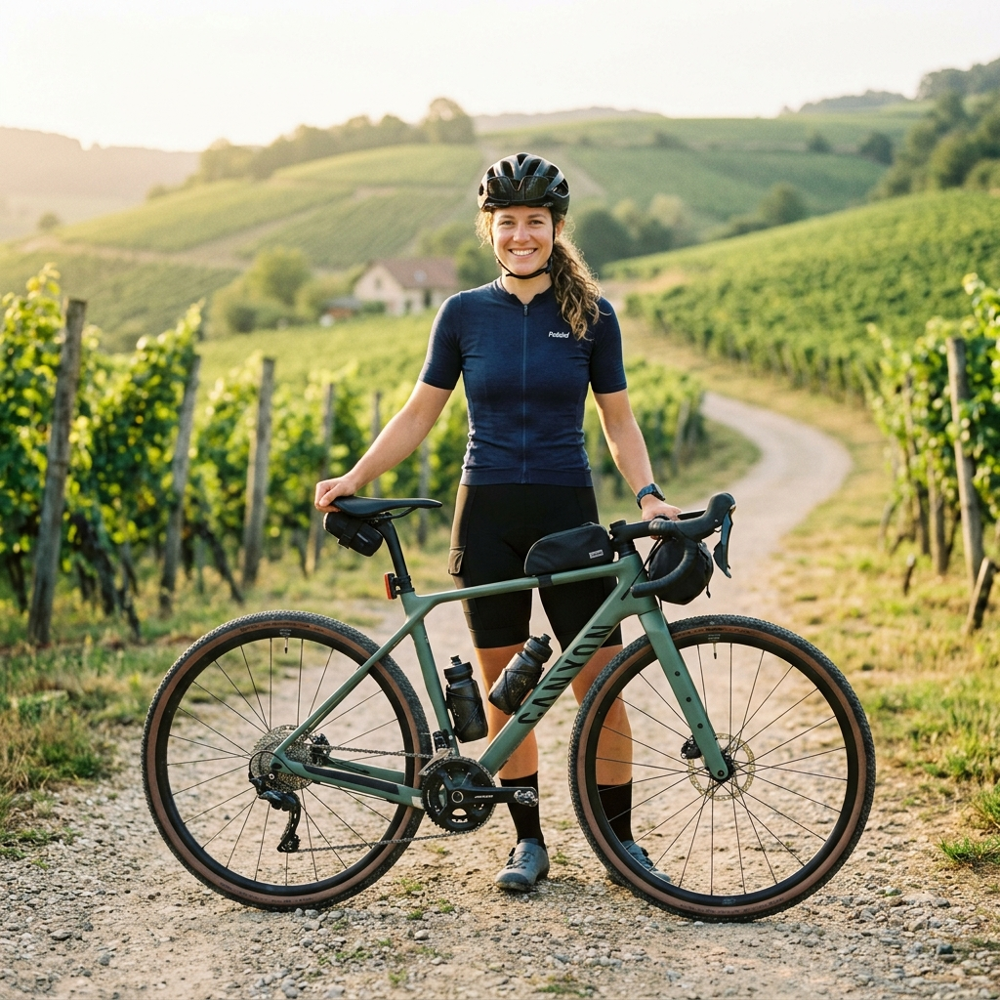
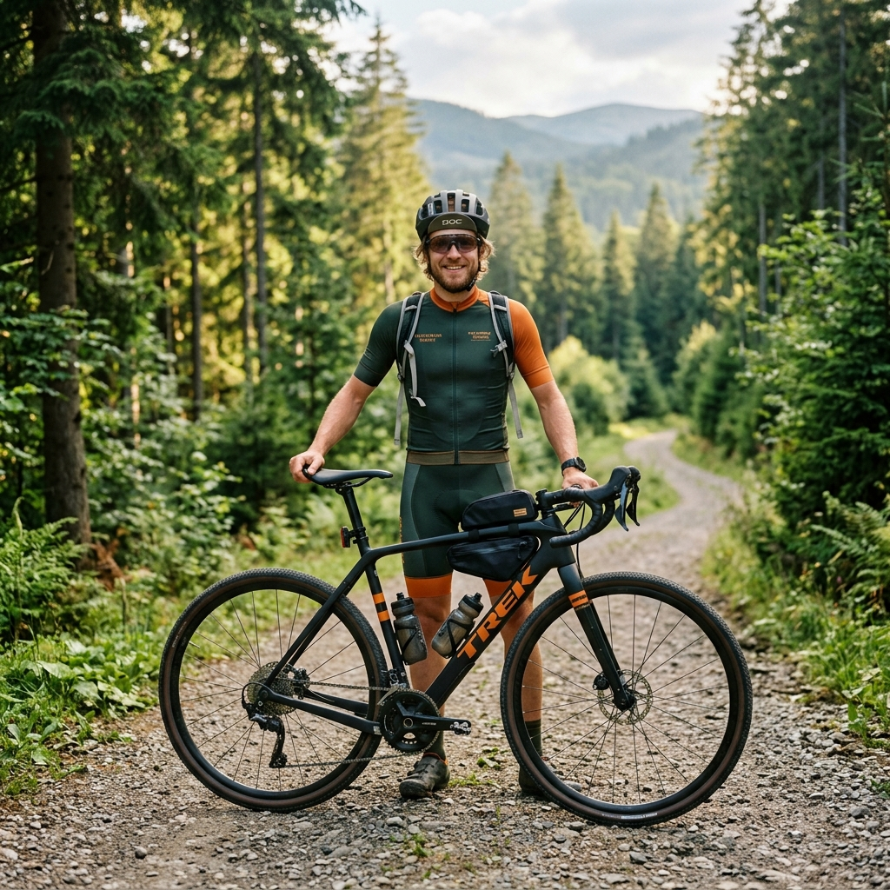

The Team
Meet The People Behind The Ride
Great rides are created by great people.
Great rides are created by great people.

"Bratislava is one of the continent's most underrated regions. Cycling gives us the opportunity to bridge cultures, cross countries, and feel local wind in a single afternoon."
Peter has cycled all across Central Europe but loves returning to the Bratislava paths. He created Bike Bratislava to connect international visitors with his favorite local hideouts, backroads, and regional routes.
Request Peter as Guide
"Riding a bicycle through row vineyards is the best way to touch our local terroir and learn wine history."
Katka has a background in history and winemaking. She mixes local stories and vineyard secret single tracks to make every ride feel like a journey through time, stopping to sample local products along the way.
Request Katka as Guide
"If you aren't leaving the pavement, you're missing half of what the Carpathians have to offer."
Martin is a competitive gravel racer. If you want a fast road sportive or to push your gravel limits through forest routes, Maťo knows every single stone, fire road, and winding path in the Little Carpathians.
Request Martin as Guide